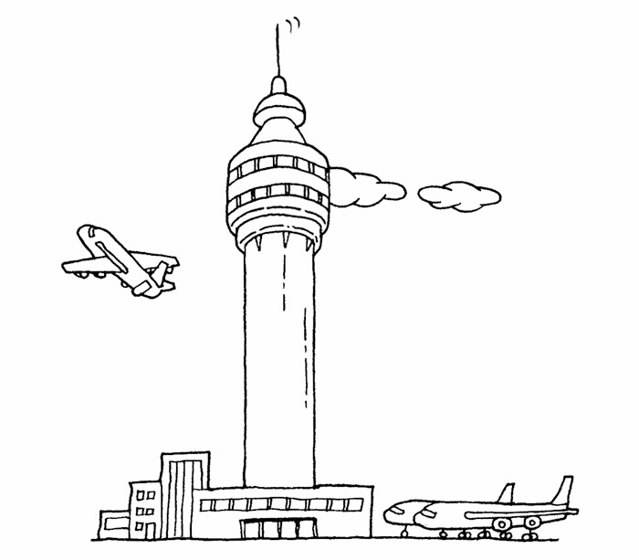

在现实生活中也有很多中介者的例子，下面列举几个。
1. 机场指挥塔
中介者也被称为调停者，我们想象一下机场的指挥塔，如果没有指挥塔的存在，每一架飞机要和方圆100公里内的所有飞机通信，才能确定航线以及飞行状况，后果是不可想象的。现实中的情况是，每架飞机都只需要和指挥塔通信。指挥塔作为调停者，知道每一架飞机的飞行状况，所以它可以安排所有飞机的起降时间，及时做出航线调整。

2. 博彩公司
打麻将的人经常遇到这样的问题，打了几局之后开始计算钱，A自摸了两把，B杠了三次，C点炮一次给D，谁应该给谁多少钱已经很难计算清楚，而这还是在只有4个人参与的情况下。
在世界杯期间购买足球彩票，如果没有博彩公司作为中介，上千万的人一起计算赔率和输赢绝对是不可能实现的事情。有了博彩公司作为中介，每个人只需和博彩公司发生关联，博彩公司会根据所有人的投注情况计算好赔率，彩民们赢了钱就从博彩公司拿，输了钱就交给博彩公司。